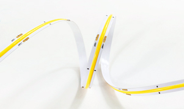

How Chip-on-Board and SMD-on-Board flexible LED strips create a continuous, dot-free line of light, and how to choose the right density, colour and power for your design.

Overview
COB (Chip-on-Board) and SOB (SMD-on-Board) flexible LED strips are both designed to remove the visible "dots" of conventional LED tape, giving a smooth, seamless, unbroken line of light. Instead of a row of separate bright points, the whole surface of the strip glows evenly, so it can be seen directly or reflected in gloss surfaces without hotspots.
They reach that dot-free look in different ways. A COB strip bonds hundreds of tiny, unpackaged LED chips directly onto a slim flexible printed circuit (FPC) under one continuous layer of phosphor. An SOB strip solders closely packed, pre-binned mini-SMD LEDs onto a heavier copper board under a continuous diffusing silicone coat, giving a clean white look when off, tight colour consistency between reels and higher power over longer runs.
Our PF5000 series COB and SOB strips are available from 420 to 576 LEDs/m on 4, 8 and 10mm wide FPC, in 12V and 24V versions, with colour temperatures from 1800K to 6500K, CRI 80, 90 or 95, and in both fixed and tuneable white CCT. For high-output applications the 20mm wide Ultra High Intensity COB Flexistrip packs 3072 LEDs/m.
The technology
On a conventional SMD strip, each LED is a separate packaged component with its own phosphor, spaced several millimetres apart. Close up, or when reflected in a gloss surface, each one shows as a distinct bright spot, so SMD strip normally needs a deep profile and diffuser to blend the light.
On a COB (Chip-on-Board) strip, bare blue LED dies with no individual housing are bonded straight onto the FPC at very high density, then blanketed under a single continuous line of phosphor-loaded silicone. The phosphor converts the blue light to white along its whole length, so light leaves the strip as one continuous surface rather than individual points.
An SOB (SMD-on-Board) strip reaches the same dot-free result a different way. Ultra-small packaged mini-SMD LEDs, each with its own phosphor, are soldered closely together on the board, then covered with a thick, continuous layer of light-diffusing silicone. In effect it is a very high-density SMD strip under a seamless diffuser.
Benefits
Why designers choose COB and SOB strip where the light itself is on show.
A continuous phosphor surface gives an even line of light, even when the strip is directly visible or reflected in gloss worktops, glass or polished floors.
No need for a deep channel to blend individual LEDs, so COB suits slim aluminium profiles, shelf edges, coves and tight furniture recesses.
Light is emitted over a wide angle from the whole surface, giving soft, glare-free illumination and smooth wall washes without scalloping.
CRI 80, 90 and 95 options and colour temperatures from 1800K to 6500K, with tuneable white COB and SOB strip for adjustable colour temperature.
High chip density means cut points are closer together than on most SMD strip, so runs can be trimmed accurately to the space available.
Thin FPC bends easily around curves, and with no separate LED packages to knock off, COB strip is tolerant of handling during installation.
COB vs SOB
COB and SOB both remove the visible dots of standard SMD strip, but the way they are built affects appearance when switched off, colour matching, power and run length.
| Characteristic | Standard SMD strip | COB strip | SOB strip |
|---|---|---|---|
| Light source | Packaged SMD LEDs, spaced apart | Bare blue LED dies bonded to the board | Packaged mini-SMD LEDs, closely spaced |
| Phosphor / cover | Phosphor in each LED package | One continuous phosphor-silicone layer | Phosphor in each LED, under a continuous diffusing silicone layer |
| Lit appearance | Individual dots | Dot-free | Dot-free |
| Unlit appearance | Visible LEDs | Solid yellow phosphor line | Clean white or frosted finish |
| Colour consistency | Good, binned LEDs | Can vary slightly between production batches | Very consistent, pre-binned LEDs for close reel-to-reel matching |
| Board & power | Wide range | Thin, very flexible FPC; standard widths suit low to medium power | Heavier copper FPC; suits higher power per metre |
| Run length | Depends on voltage and power | Best for shorter single-feed runs | Longer single-feed runs with less voltage drop |
| Thermal | Heat spread across separate LEDs | Heat concentrated in a narrow line; mount on aluminium profile | Heavier copper tracks help spread heat |
| Tuneable white | Available | Available | Available |
Standard SMD strip is still a cost-effective choice where the strip is hidden and the light is bounced or diffused. When specifying COB or SOB, also consider density (higher gives a smoother line and more output), power per metre (match to your profile's heat dissipation), voltage (24V allows longer runs with less voltage drop) and CRI (90+ for retail, hospitality and display lighting).
COB and SOB strips are used wherever a clean, continuous line of light is part of the design.
Ceiling coves, wall grazing and recessed lines where the strip or its reflection is on view.
Shelf edges, display cabinets and showcases where high CRI brings out true product colour.
Under-cabinet and plinth lighting over gloss surfaces that would otherwise show every LED dot.
Bar fronts, back-bar shelving and signage edges with warm, even accent lighting.
Linear light engines for slim luminaires, mirrors and backlit panels in shallow housings.
Wide-format, high-density COB strip for task and general lighting where lumen output matters.
Our range
Browse our COB and SOB strips, and the drivers and interconnection to complete your installation.
FAQ
Our team can help specify the right density, colour temperature, CRI and power rating, and match it with the right driver and profile for your project.
Talk to Our Engineers